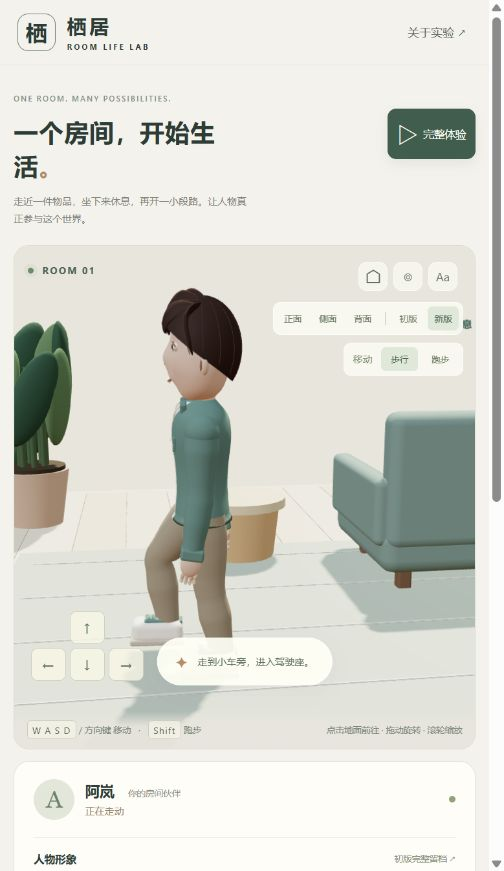
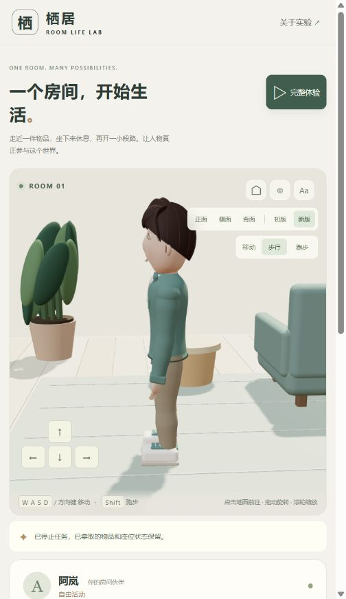

2026-09-06 · 原创房间首版
目标与实现范围
用户要求自行制作人物及场景，并作为独立子项目管理。本项目由仓库 project:new 工具创建，永久编号 005，目录最终确定为 005-room-life。没有将 Nova3D 的代码作为本项目实现，也没有导入完整上游仓库。
最初误将获取现成人物作为验证路径，用户明确纠正后移除了演示中的下载模型、贴图和许可证文件，改为原创程序化人物。原始调研残留仅在被 Git 忽略的 tmp/ 目录中，不参与源码构建或静态发布；自动安全检查拒绝删除该临时目录，返回原因仅为“被策略阻止”，未尝试绕过。
运行版本
- Windows；Node.js
v22.15.0；Python3.10.11。 - Three.js
0.180.0；esbuild0.25.10；精确依赖记录在package-lock.json。 - 本仓库基线：
22376ecd033a00404d9ed311437759d8fd059f46；新增实现为本次未提交工作区内容。 - 浏览器通过本地静态服务器访问
/demos/005-room-life/，不调用生成模型或远程资产服务。
自动化验证
执行 npm test，六项测试全部通过：
- 完整体验完成八项能力，结束时杯子在边桌、人物空手、座位及车辆释放。
- 拒绝空手放置和重复拿取；持物不能坐下或开车；放置后可再次拿取。
- 前往座位、落座、起身的中途取消保持占用一致；键盘或地面点击也不能绕过已占用状态。
- 抓握和放置交接时刻前后取消，杯子归属正确。
- 手动转向改变航向，车辆整体不越过驾驶边界，下车前先减速。
- 路径绕过桌子，目标落在家具内时拒绝移动。
自动化测试覆盖行为规则，没有把这些结果当作视觉品质验收。
实际浏览器验证
通过可见按钮触发「完整体验」，最后画布诊断属性与界面共同显示：
{"mode":"idle","holding":false,"cupOwner":"side","seatOccupied":false,"carOccupied":false,"carDistance":2.84,"completed":["move","pickup","place","sit","stand","enter","drive","exit"],"auto":false,"action":null}
浏览器记录的 error / warn 列表为空。检查了房间全景、人物近景和坐姿。针对观察到的问题修正四肢几何法线、窄窗口房间裁切、椅面穿插，以及取消动作时可能遗留的占用。截图保存在 docs/assets/projects/005-room-life/。
能支持的结论
- 完全自制人物、场景和动作的有限房间原型可以运行，不需要预先获取现成人物资产。
- 八项行为不仅有视觉变化，也有对应的物品归属、位置、占用、体力及车辆控制状态。
- 当前动作专门适配一个人物、一张椅子、一个杯子和一辆小车；不能据此推断已经解决任意角色与任意物品的交互。
- 原创程序化建模适合本轮风格化验证；精细人物、五指接触、足部锁定、上下车动作及完整养成系统仍需后续制作。
- 只验证当前本地浏览器；未完成手机实机、低端 GPU、长期运行和跨浏览器兼容性验收。
2026-09-07 · 保存 V1，优化阿岚 V2
保存策略
在修改前建立 snapshots/v1-20260907/，保存完整源码、测试、依赖锁定文件和原始文档；原始演示冻结到 docs/demos/005-room-life/versions/v1/，原始截图复制到 docs/assets/projects/005-room-life/v1/。共 22 个原始文件记录 SHA-256，验证均保持不变。
当前页面内的 V1 实现与留档人物源码逐字节一致。切换新旧人物不重置物品或任务；冻结的完整页面则保留原始界面、镜头、模型与行为。恢复方法见 snapshots/README.md。
本轮实际变更
- 重做连续脸型和顶点肤色，调整眼窝、眼睑、眉毛、鼻部和嘴角，缩小头部相对体积。
- 原创侧分发型使用发面与宽发束，补充侧面和后脑轮廓；修正后脑局部头皮穿出发面的缺口。
- 躯干与内搭使用连续蒙皮，肩膀改圆，服装领口和袖口重新制作，四肢轮廓更有变化。
- 骨骼从 V1 的 16 根扩展到 V2 的 39 根，包括颈部、锁骨与五指关节。手型支持放松、持杯、坐姿和驾驶预设。
- 手臂和腿部使用两段肢体求解并指定弯曲方向；行走基于实际位移推进步态，支撑期脚部锚点固定，停止时缓和回到站姿。
- 拿放时头部看向目标；坐起加入躯干前倾；坐下后手部放到膝盖附近。
- 增加同场景 V1 / V2 切换、正侧背观察及自然 / 微笑 / 放松预设。靠墙观察时剖开遮挡墙体和装饰，小屏幕操作后回到画面查看效果。
验证
npm test：12 项测试通过。原有六项行为测试之外，增加新旧模型完整流程、顶点和蒙皮有效性、直线支撑脚接触、持杯关系、留档完整性及后脑遮盖回归检查。npm run build：静态构建通过。构建范围仅覆盖当前演示文件，不覆盖versions/v1/。- 实际浏览器：新形象完整体验到达 8 / 8；杯子归属为边桌，座位和车辆占用均释放。浏览器 error / warn 记录为空。
- 同镜头切换 V2 → V1 → V2 时，界面与
data-avatar一致，世界状态保持不变。 - 检查并保存正面、侧面、背面、持杯及坐姿真实截图。截图分别为
character-v2.jpg、side-v2.jpg、back-v2.jpg、holding-v2.jpg、seated-v2.jpg；comparison-v1.jpg为新界面同镜头中的旧形象。
本轮结论与剩余工作
人物造型和姿态完成首轮实际优化，原始形象保留且可运行对比。这里没有导入第三方人物或动作资产。
五指能够弯曲，但仍使用针对当前杯子和方向盘的手型，尚未完成逐指碰撞与接触求解。平地直线行走的支撑期已经约束，快速转弯、坐起和上下车仍可能出现滑动或穿插。衣服依然是风格化几何，肩部过渡、衣摆接触、布料与头发动态尚未达到精细角色制作标准。神态是简单预设变形，未接入语音口型或完整表情系统。没有进行手机实机和跨浏览器性能验收。
2026-09-07 · 修正持续半蹲的行走姿态
视觉复现与原因
通过当前演示的侧面观察，复现了移动时双膝持续弯曲、躯干整体下沉的现象。V2 的旧步态固定将骨盆下压：走路 6.5 cm、跑步 9 cm，仅叠加 0.7 cm 的上下摆动。这使腿部求解即使在脚位于身体下方时也保持明显屈膝。普通行走额外抬脚 7.5 cm，加重了视觉上的屈膝感。
还发现落地时直接保留上一帧摆动脚位置的问题：帧率降低时，最后一帧尚未到达落脚点，实际步幅便被缩短，身体继续前进后腿部更容易超出可达范围。
修正
- 先确定左右脚目标，再依据脚与髋部的水平距离和腿长计算骨盆高度；支撑腿接近伸展，迈步时自然升降，不再固定下压。上升进行平滑处理，向下调整优先保证脚部可达。
- 普通行走抬脚改为 4.5 cm，跑步为 10 cm。
- 跨过落地时刻时，按步态周期边界补齐落脚位置，再锁定支撑脚，避免落点依赖最后一帧采样。
- 仅修改当前 V2，原始 V1 源码、页面和截图留档的散列检查保持通过。
验证
两秒无遮挡直线移动、60 fps、跳过最初约三分之一秒启动阶段，以大腿与小腿骨骼向量夹角计量（0° 为伸直）：
| 指标 | 修正前 | 修正后 |
|---|---|---|
| 行走支撑期平均屈膝 | 39.2° | 21.2° |
| 跑步支撑期平均屈膝 | 43.7° | 27.0° |
| 行走骨盆最高位置 | 0.883 m | 0.933 m |
- 13 项测试通过：新增走路、跑步在 20 / 30 / 60 fps 下的支撑腿伸展与骨盆高度检查；脚部接触误差门槛由 5.5 cm 收紧为 2 mm，连续支撑期间落点固定。测试场地改为无遮挡区域，覆盖左右脚多个周期。
- 静态构建及根目录项目校验通过。
- 实际浏览器侧面复查了连续行走；walking-v2.jpg 记录其中一个迈步阶段。
- 浏览器完整体验再次达到 8 / 8，杯子归边桌，座位与车辆占用释放，error / warn 记录为空。
{kind=link}
本次消除固定压低重心的问题。脚部仍以水平脚掌为主，未加入完整脚跟着地、脚尖蹬地与跑步腾空阶段；急转弯等接触细节仍需后续改善。
2026-09-07 · 走跑摆臂与持物适配
实现
- 原先走路和跑步共用小幅正弦摆臂，肘部固定为轻微弯曲；现在由实际脚部前后位置驱动同侧手臂反向摆动，与对侧腿协调。
- 行走时肘部放松、手指自然弯曲；跑步时增大上臂摆幅，肘部约弯曲 75–84°，手掌朝内，手指进一步收拢。肩胸加入轻微反向转动，上身适度前倾。
- 摆臂和走跑权重分别平滑处理，起步、速度切换和停步后回到放松姿态均连续过渡。
- 持杯时，持物手优先对齐杯把、杯身保持直立；另一只手继续摆动，减小摆幅和躯干转动。抓取、放置、坐姿及驾驶的手臂约束仍然优先。
- 画面内增加「步行 / 跑步」按钮，作用于地面点击、前往任务点和手动移动；移动途中切换保留目的地及后续动作。Shift 仍可临时跑步，重新开始及重新启动完整体验恢复步行。
验证
- 17 项自动化测试通过。新增世界空间中的手脚反向协调、左右手交替、走跑屈肘及摆幅差异、速度切换与停步连续性、持杯走跑稳定性，以及切换速度保留任务的检查。
- 60 fps 直线移动样本中，同侧手脚前后运动相关系数约为：步行 -0.96、跑步 -0.93；跑步上臂摆幅约为步行的 1.58 倍。这里记录的是本原型的程序化动作结果，不是动作捕捉或人体运动学验收指标。
- 之前的 20 / 30 / 60 fps 足部接触、支撑腿伸展和 V1 留档散列检查继续通过。静态构建和项目目录校验通过。
- 浏览器实际查看了侧面跑步、途中切回步行和正面持杯跑步，截图为 running-arms-v2.jpg 与 carry-running-v2.jpg。截图均为实际动作中的单帧。
- 在完整体验开始后切到跑步，浏览器再次完成 8 / 8；杯子归属边桌，座位及车辆占用释放，error / warn 记录为空。
{kind=link}
{kind=link}
当前依然是风格化程序化动作。手臂没有通用环境碰撞避让，手指也没有逐指接触求解；脚跟脚尖过渡、急转弯惯性和跑步腾空仍是后续方向。
2026-09-07 · 跑步从快走节奏改为独立周期
问题复现
侧面连续画面确认，上一版跑步仍沿用每条腿约 58% 周期处于支撑期的步行结构，因此始终至少有一只脚着地；摆动脚仅抬高约 10 cm，缺少后腿折叠与腾空。调整速度和摆臂并不足以产生清楚的跑步姿态。此前关于跑步摆臂的验证不等于腿部跑步品质通过。
当前实现
- 新增
src/running-gait.js，独立定义跑步支撑、回收、腾空和重心曲线。稳定跑步时，每条腿支撑约 34% 的完整周期，左右交替间出现腾空；完整周期位移由原来的 1.22 m 调整为 1.65 m，减少碎步感。 - 后腿先折叠、抬跟回收，再抬膝前摆，最后伸腿回到落脚点。跑步摆臂改为跟随左右大腿的相对前后位置，因为回收腿的脚踝可能仍在身后，而膝盖已经向前。
- 支撑后段以固定前掌接触点抬起脚跟，继而离地；身体配合落地压缩、蹬地上升与空中回落。上身增加适度前倾。
- 按鞋底前后缘检查倾斜鞋子的最低点，避免脚踝高度正确但鞋尖或后跟穿地。
- 走跑权重渐变；中途停步时，脚和骨盆向站姿过渡。原始 V1 保持冻结。
验证与边界
- 17 项自动化测试通过。替换原先把跑步当作步行支撑腿伸展的检查，改为验证实际鞋底双脚离地、回收屈膝、前掌接触点固定和鞋底不穿地；原有步行接触、摆臂、持杯、走跑切换、生活交互和留档检查继续通过。
- 20 / 30 / 60 fps、两秒无遮挡直线跑步、略去最初半秒过渡的样本中：双脚离地阶段占约 31–33%；双脚同时离地时，较低鞋底的最大净空约 9–10 cm；回收腿最大屈膝约 129°。这些数值是本原型的视觉动作测量，并非人体动力学标定。
- 实际浏览器检查了侧面连续跑步和中途停步；截图 running-cycle-v2-a.jpg、running-cycle-v2-b.jpg 记录独立跑步周期的两个阶段。此前
running-arms-v2.jpg为旧版快走式腿部节奏，保留用于对照。 - 跑步模式下完整体验再次达到 8 / 8，杯子归属边桌，座位和车辆占用释放；浏览器 error / warn 为空。静态构建通过。
{kind=link}
{kind=link}
此轮实现了有腾空和回收阶段的风格化跑步。重心与肢体轨迹仍由制作的曲线驱动，尚未进行真实重力、冲量和肌肉动力学求解；急转弯、任意地形和动作捕捉级细节仍需继续改善。
2026-09-07 · 步行恢复放松的前后摆臂
侧面复查发现，旧步行虽然已有交替节奏，但上臂的默认角度偏向前方，加上肘部约 16–25° 的持续弯曲，手容易停留在髋部前方；手掌方向也强化了端手的观感。仅验证手脚反向相关性不足以验收自然摆臂。
本轮将步行摆臂的中心调整到自然下垂附近，肘部改为约 6–9° 的轻微弯曲，手掌转向身体内侧。手臂经过髋部两侧向前、向后摆动；跑步的屈肘姿态、持杯手的稳定约束继续保留。停步时回到原有站姿。
- 18 项测试通过。新增两个朝向下的世界空间检查：每只手均到达髋部前后至少 17 cm、前后行程明显大于横向行程、肘部保持轻微弯曲、手掌朝内。此前的跑步、持物、动作切换及 V1 留档检查继续通过。
- 静态构建通过；实际浏览器从正面及侧面检查连续步行。walking-arm-swing-v2.jpg 为本轮侧面摆臂截图。
- 浏览器完整体验达到 8 / 8，杯子归边桌，座位及车辆占用释放，error / warn 记录为空；项目目录校验通过。
{kind=link}
这是对空手步行姿态的修正；通用手臂避障、衣物碰撞及更细的手腕惯性仍未实现。
2026-09-07 · 起步、短停重启与整体动作排查
实际复现了短停反向后因旧支撑脚残留而出现的深度屈膝，同时定位首步相位、即时满速移动、急转不可达落点、顶墙运动状态和地面高度不一致问题。本轮已修正这些问题；23 项测试及实际浏览器 8 / 8 完整体验通过。新增检查从第一帧开始，补齐此前稳态检查遗漏的启动与重启阶段。
详见 完整动作排查记录，包含原因、修改、84 组起步与过渡场景、90 秒随机输入检查、实际截图，以及急转接触、坐起和上下车等尚待细化的边界。本文前面的数值与局限保留为对应历史版本记录，当前状态以该排查记录为准。
2026-09-07 · 步行支撑伸展与屈膝回收周期
再次确认的问题
起步下跪保护通过，并不意味着稳定行走已经自然。用户再次指出半蹲感后，侧面画面及逐帧测量确认：支撑中期伸展仍不足，后脚离地前后的位置继续限制骨盆高度，导致承重腿一起弯曲。此前只检查支撑期平均角度与骨盆最低值，未充分区分支撑中期、离地回收和落地前伸展。
修改
- 新增 walking-gait.js，独立定义步行的脚跟接触、轻微屈膝承重、接近伸直支撑、抬跟离地与摆腿回收阶段。
- 由承重腿决定期望骨盆高度，同时保留双腿可达检查和起步保护；后脚通过抬跟与屈膝回收，让前方承重腿能够伸展。
- 摆动脚更早从身后收回，增加屈膝所需的净空，落地前重新伸展。接近伸直时保留轻微弯曲，避免膝盖锁死。
- 支撑脚围绕鞋跟或前掌滚动；检查实际接触点固定，而不是要求脚踝在抬跟过程中保持不动。走跑混合阶段也按当前接触点验证。
同一场景的前后对比
60 fps、4 秒无遮挡直线步行、去除最初 0.65 秒启动阶段；支撑中期统一取每条腿完整周期的 18%–40%，弯曲角度以 0° 为直腿。
| 指标 | 本轮修改前 | 本轮修改后 |
|---|---|---|
| 支撑中期平均屈膝 | 19.8° | 9.4° |
| 支撑中期屈膝范围 | 11.7°–31.9° | 5.8°–16.2° |
| 摆动腿最大屈膝 | 42.3° | 64.6° |
| 骨盆局部高度范围 | 0.886–0.932 m | 0.902–0.938 m |
| 双膝同时弯曲超过 20° 的样本比例 | 21.9% | 0% |
上述是当前模型在限定直线场景中的测量，不代表转弯或所有动作均达到同样数值，也不是动作捕捉或人体动力学认证。

24 项自动化测试通过。新增 20 / 30 / 60 fps 下分别检查左右腿支撑伸展、屈膝回收和落地伸展；原有起步、急转、短停反向、走跑切换、持杯、跑步腾空、实际地面接触及 V1 留档检查保持通过。静态构建与项目校验通过。实际浏览器已检查连续侧面动作，步行模式完整体验再次达到 8 / 8；杯子归边桌，座位与车辆占用释放，error / warn 记录为空。
本轮解决稳定步行的伸屈节奏，急转时的纠正性脚部滑动、坐起和上下车接触仍沿用动作排查记录中的边界。
2026-09-07 · 逐脚收步、转弯连续性与刷新一致性
修改
- 旧停步在 0.24 秒内同时把双脚插值回站姿，并直接恢复脚掌朝向。现在从实际脚位和脚掌旋转开始，逐脚抬起、落位；一只脚调整时保留另一只脚的世界位置与方向。每步约 0.24 秒，已在站位的脚无需重复抬起。
- 收步目标在抬脚时确定，不在空中追逐持续变化的目标；落地后再处理另一只脚。重新移动时可从实际脚位接回步行，交互状态和物品归属仍由世界逻辑负责。
- 旋转速度限制为 4.8 rad/s（约 275°/s）；朝向偏差较大时进一步减少位移。连续转弯不再因累计转角超过阈值而重启步态，支撑脚保留原有落点，摆动脚面向新方向落地。
- 将状态提示移到三维画面下方，保留消息播报，避免窄窗口下遮住脚部。
- 实机发现页面已更新结构但仍加载旧样式：提示条的计算位置仍为
absolute。构建现按内容散列为脚本和样式添加版本参数；重新加载后确认新资源地址及static提示布局。这个现象证实了样式缓存，不能据此断言此前所有动作脚本也都被缓存。
验证
26 项测试通过，保留上一轮的伸腿周期、跑步、持杯、起步与随机输入检查。新增：
- 24 组停步场景：20 / 30 / 60 fps × 步行 / 跑步 × 0.6 / 0.8 / 1.0 / 1.2 秒迈步时刻；检查收步期间另一只脚的位置变化小于 2 mm、方向不突变，移动脚有真实离地净空，并最终回到站位。
- 三个帧率的连续弯道与急转检查：旋转速率受限，持续移动时步态相位不倒退或重置。
- 静态构建和仓库项目校验通过；浏览器检查了停步、反向起步、提示布局和带内容版本的资源地址。确认加载最新资源后，完整体验切到跑步并再次完成 8 / 8；杯子归边桌，座位与车辆占用释放，error / warn 记录为空。

此截图是实际动作完成后的站姿，逐脚收步过程由连续观察及逐帧测试验证，不能从单帧截图推断完整过程。
本轮仍不是完整的惯性制动和物理转身系统：松开移动输入或停止任务后，世界位置仍立即停止，随后完成脚部收步；极速折返仍保留不可达脚位纠正，可能有少量滑动。坐起与上下车的全身接触、环境碰撞尚未扩展。
2026-09-07 · 减速、到达与低速姿态
旧实现松开方向键后立即归零速度，跑步切回步行也直接跳到步行速度；路径结束时没有提前减速。本轮补齐速度过渡，并保留「停止任务」的立即打断行为。
- 松键后沿最后的实际移动方向减速；最终一帧只积分到速度归零，避免不同帧率产生不同的多余位移。方向键和触控方向按钮共用输入处理。
- 跑步切回步行逐渐降速，继续保留目的地及后续交互。
- 根据整条剩余路径的距离提前减速，短末段也计入规划；接近终点进一步降低速度，距离小于 8 mm 时结束导航。杯子、座位和车辆的交接仍由原有动作逻辑执行。
- 低速时同步缩短步幅、减小摆臂，再接上逐脚收步；稳定走跑的原有周期保持。
- 碰撞约束优先于平滑减速，靠墙时不能为了完成制动距离而穿越边界；「停止任务」和取消操作仍立即清除速度与续行方向。
当前参数与验证
当前人为设定的减速度为 7.5 m/s²，属于原型操控参数，未进行人体动力学标定。无遮挡直线达到巡航速度后松键：
| 移动方式 | 初速 | 理论减速时间 | 前移距离 |
|---|---|---|---|
| 键盘步行 | 1.5 m/s | 0.20 s | 0.15 m |
| 跑步 | 2.8 m/s | 约 0.37 s | 约 0.52 m |
20 / 30 / 60 fps 自动检查均与上述位移积分相符；表中时间不包含随后原地收步的时间。29 项测试通过，新增验证包含：
- 三个帧率下的走跑松键减速、单调降速、停止按钮立即响应。
- 三个帧率 × 两种速度 × 普通 / 短末段路径：不越过终点，到达前速度低于 0.06 m/s，以及靠墙松键不穿越边界。
- 减速到收步的全帧骨盆、脚部可达与地面检查，最终恢复站姿和放松手臂；之前的防下跪、伸腿周期、持杯、转向与 V1 留档验证继续通过。
静态构建和仓库项目校验通过。真实浏览器检查了跑步前往目标后的站姿，以及移动中切回步行的侧面过渡；松键距离使用自动化模拟验证。确认加载本轮脚本后，完整体验切到跑步并再次完成 8 / 8，杯子归边桌、座位和车辆占用释放，error / warn 记录为空。页面继续使用按内容生成的资源版本，避免旧脚本缓存。
这是有距离约束的程序化减速，并非完整的物理惯性系统。突然反向、碰撞和显式取消仍可能立即降速；横向重心、身体制动姿态及与鞋底摩擦联动尚未实现。
2026-09-07 · 身体配合与优化记录整理
新增加减速躯干反应、转弯侧倾、肩胯转动差、头部补偿、持杯减幅与停止复位。32 项自动化测试及构建、项目校验通过，原有防下跪、脚部接触、走跑周期和 V1 留档检查保持通过。最新构建在浏览器完整体验中再次完成 8 / 8，杯子归边桌、座位及车辆占用释放，error / warn 为空。
本轮把历次修改整理为 优化记录，以 O01–O10 索引保存历史问题与对应修改；O10 包含本轮制作参数、真实截图、具体检查和未解决问题。身体变化是视觉姿态控制，不能视为真实重心平衡或摩擦动力学已经实现。
2026-09-07 · 优化记录接入网页
演示顶部新增「优化记录」，在新标签页中打开历史记录，便于保留房间中的操作状态。记录页按最新优先展示 O01–O11 的可展开卡片，提供目录、真实截图、详细实验记录与下一步优化建议。
网页由项目 Markdown 在构建时生成，共六个关联记录页面；本地文档、截图及源码引用转换为可访问链接，并检查目标文件和页面锚点。使用 marked 18.0.11（MIT）作为构建依赖，浏览器无需运行 Markdown 解析器。
验证：32 项原有测试、静态构建及八个项目的目录校验通过。在实际浏览器点击演示入口、展开历史卡片、跳转目录和详细实验文档均正常；902 px 宽窗口无页面横向溢出，记录页 error / warn 为空。已加入窄屏布局规则，尚未进行手机实机验收。本轮没有修改人物动作。
下一步建议按人物肩颈与关节形变、坐起及上下车接触、抓握放置、材质神态、动作回放验收工具的顺序推进；具体效果目标与验证方式已写入优化记录，均为待办。
2026-09-07 · 人物形象成为主线，原创衣橱首版
用户确定先完善人物形象、发型与换装，再围绕形象改善动作。本轮新增三种发型、两种脸型、两种上装、两种裤装、两种鞋型及肤色、发色、穿搭配色。默认人物调整下颌、耳部、眼白、头发受光与连续肩袖；实机发现裤腰穿出衣摆、针织收边碎裂后，收窄裤装顶部并改用连续衣摆收边。
部件共用原有骨架，切换只改变可见部件、头部轮廓和材质；未重建世界或重置生活动作。衣橱支持当前浏览器保存、刷新恢复、恢复已保存与试穿默认搭配。当前只存一套搭配，尚未提供多档案或自由捏脸。
最后背面复查发现清爽短发有小块头皮穿出，调整后脑覆盖后消失；原后脑检查扩展为三种发型、两种脸型、七个高度，并排除隐藏部件。该专项检查通过，真实背面再次确认缺口修复。
35 项测试通过，包括原有步态、防下跪及 V1 留档检查；新增六组搭配完成八项生活行为、60 次持杯中切换时骨架与资源复用、物品状态不变，以及存储损坏、未知版本和读写异常处理。
实际浏览器检查了默认人物、齐耳和清爽短发、正侧背近景、针织上装、直筒裤与短靴，修正了静止衣摆穿插；验证保存后刷新、试穿默认和恢复保存、V1 切回 V2。齐耳短发、针织、直筒裤和短靴搭配切到跑步后，完整体验达到 8 / 8；随后检查了侧面坐姿，error / warn 为空。单帧截图用于记录外观，不作为整个动作过程无穿插的证明。

详细部件、截图与边界见 O12 优化记录。下一步优先精修默认人物及部件风格，再扩充衣橱、角色档案，之后补齐穿着不同服装时的接触和动作细节。